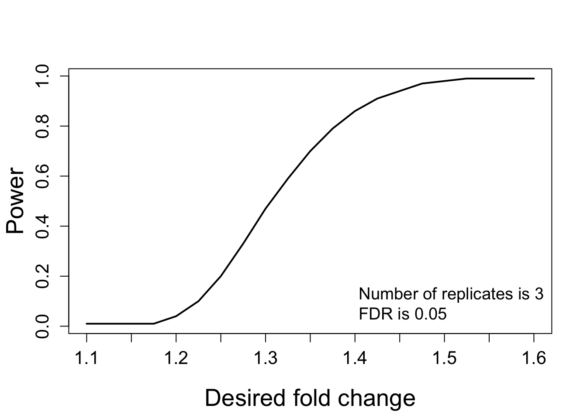

Chapter 1 Section 6: Introductory statistics with R
Objectives
- Randomization and basic statistics
- Statistical hypothesis testing: t-test
- Sample size calculation
- Analysis for categorical data
- Linear regression and correlation
1.1 Basic statistics
1.1.1 Randomization
1.1.1.1 Random selection of samples from a larger set
Let’s assume that we have the population with a total of 10 subjects. Suppose we label them from 1 to 10 and randomly would like
to select 3 subjects we can do this using the sample function. When
we run sample another time, different subjects will be selected. Try
this a couple times.
sample(10, 3)## [1] 2 5 6sample(10, 3)## [1] 9 5 10Now suppose we would like to select the same randomly selected samples every time, then we can use a random seed number.
set.seed(3728)
sample(10, 3)## [1] 1 9 10set.seed(3728)
sample(10, 3)## [1] 1 9 10Let’s practice with fun example. Select two in our group member for coming early next Monday.
group.member <- c('Cyril', 'Dan', 'Kylie', 'Meena', 'Sara', 'Ting', 'Tsung-Heng', 'Tyler')
sample(group.member, 2)## [1] "Ting" "Sara"1.1.1.2 Completely randomized order of MS runs
Let’s load iprg data first.
load('./data/iprg.rda')We can also create a random order using all elements of iPRG
dataset. Again, we can achieve this using sample, asking for exactly
the amount of samples in the subset. This time, each repetition gives
us a different order of the complete set.
msrun <- unique(iprg$Run)
msrun## [1] "JD_06232014_sample1_B.raw" "JD_06232014_sample1_C.raw"
## [3] "JD_06232014_sample1-A.raw" "JD_06232014_sample2_A.raw"
## [5] "JD_06232014_sample2_B.raw" "JD_06232014_sample2_C.raw"
## [7] "JD_06232014_sample3_A.raw" "JD_06232014_sample3_B.raw"
## [9] "JD_06232014_sample3_C.raw" "JD_06232014_sample4_B.raw"
## [11] "JD_06232014_sample4_C.raw" "JD_06232014_sample4-A.raw"## randomize order among all 12 MS runs
sample(msrun, length(msrun))## [1] "JD_06232014_sample4_C.raw" "JD_06232014_sample3_A.raw"
## [3] "JD_06232014_sample4-A.raw" "JD_06232014_sample4_B.raw"
## [5] "JD_06232014_sample2_C.raw" "JD_06232014_sample1_C.raw"
## [7] "JD_06232014_sample2_A.raw" "JD_06232014_sample3_C.raw"
## [9] "JD_06232014_sample3_B.raw" "JD_06232014_sample1-A.raw"
## [11] "JD_06232014_sample1_B.raw" "JD_06232014_sample2_B.raw"## different order will be shown.
sample(msrun, length(msrun))## [1] "JD_06232014_sample1_B.raw" "JD_06232014_sample3_A.raw"
## [3] "JD_06232014_sample1-A.raw" "JD_06232014_sample2_A.raw"
## [5] "JD_06232014_sample3_B.raw" "JD_06232014_sample1_C.raw"
## [7] "JD_06232014_sample2_B.raw" "JD_06232014_sample3_C.raw"
## [9] "JD_06232014_sample4_C.raw" "JD_06232014_sample4-A.raw"
## [11] "JD_06232014_sample2_C.raw" "JD_06232014_sample4_B.raw"1.1.1.3 Randomized block design
Allow to remove known sources of variability that you are not interested in.
Group conditions into blocks such that the conditions in a block are as similar as possible.
Randomly assign samples with a block.
This particular dataset contains a total of 12 MS runs across 4
conditions, 3 technical replicates per condition. Using the
block.random function in the psych package, we can achieve
randomized block designs! block.random function makes random assignment of n subjects with an equal number in all of N conditions.
library("psych") ## load the psych package
msrun <- unique(iprg[, c('Condition','Run')])
msrun## Condition Run
## 1 Condition1 JD_06232014_sample1_B.raw
## 2 Condition1 JD_06232014_sample1_C.raw
## 3 Condition1 JD_06232014_sample1-A.raw
## 4 Condition2 JD_06232014_sample2_A.raw
## 5 Condition2 JD_06232014_sample2_B.raw
## 6 Condition2 JD_06232014_sample2_C.raw
## 7 Condition3 JD_06232014_sample3_A.raw
## 8 Condition3 JD_06232014_sample3_B.raw
## 9 Condition3 JD_06232014_sample3_C.raw
## 10 Condition4 JD_06232014_sample4_B.raw
## 11 Condition4 JD_06232014_sample4_C.raw
## 12 Condition4 JD_06232014_sample4-A.raw## 4 Conditions of 12 MS runs randomly ordered
block.random(n = 12, c(Condition = 4))## blocks Condition
## S1 1 4
## S2 1 1
## S3 1 2
## S4 1 3
## S5 2 2
## S6 2 4
## S7 2 1
## S8 2 3
## S9 3 4
## S10 3 1
## S11 3 3
## S12 3 2block.random(n = 12, c(Condition = 4, BioReplicate=3))## blocks Condition BioReplicate
## S1 1 3 3
## S2 1 1 3
## S3 1 1 2
## S4 1 4 2
## S5 1 1 1
## S6 1 3 2
## S7 1 2 2
## S8 1 2 3
## S9 1 4 3
## S10 1 2 1
## S11 1 3 1
## S12 1 4 11.1.2 Basic statistical summaries
library(dplyr)##
## Attaching package: 'dplyr'## The following objects are masked from 'package:stats':
##
## filter, lag## The following objects are masked from 'package:base':
##
## intersect, setdiff, setequal, union1.1.2.1 Calculate simple statistics
Let’s start data with one protein as an example and calculate the mean, standard deviation, standard error of the mean across all replicates per condition. We then store all the computed statistics into a single summary data frame for easy access.
We can use the aggregate function to compute summary statistics. aggregate splits the data into subsets, computes summary statistics for each, and returns the result in a convenient form.
# check what proteins are in dataset, show all protein names
head(unique(iprg$Protein))## [1] "sp|D6VTK4|STE2_YEAST" "sp|O13297|CET1_YEAST" "sp|O13329|FOB1_YEAST"
## [4] "sp|O13539|THP2_YEAST" "sp|O13547|CCW14_YEAST" "sp|O13563|RPN13_YEAST"length(unique(iprg$Protein))## [1] 3027#distinct(iprg, Protein)
n_distinct(iprg$Protein)## [1] 3027# Let's start with one protein, named "sp|P44015|VAC2_YEAST"
oneproteindata <- iprg[iprg$Protein == "sp|P44015|VAC2_YEAST", ]
# there are 12 rows in oneproteindata
oneproteindata## # A tibble: 12 x 7
## Protein Log2Intensity Run Condition BioReplicate Intensity
## <chr> <dbl> <chr> <chr> <dbl> <dbl>
## 1 sp|P44… 26.3 JD_0… Conditio… 1 82714388.
## 2 sp|P44… 26.1 JD_0… Conditio… 1 72749239.
## 3 sp|P44… 26.3 JD_0… Conditio… 1 82100518.
## 4 sp|P44… 25.8 JD_0… Conditio… 2 59219741.
## 5 sp|P44… 26.1 JD_0… Conditio… 2 72690802.
## 6 sp|P44… 26.1 JD_0… Conditio… 2 71180513.
## 7 sp|P44… 23.1 JD_0… Conditio… 3 9295260.
## 8 sp|P44… 23.3 JD_0… Conditio… 3 10505591.
## 9 sp|P44… 23.3 JD_0… Conditio… 3 10295788.
## 10 sp|P44… 20.9 JD_0… Conditio… 4 2019205.
## 11 sp|P44… 21.7 JD_0… Conditio… 4 3440629.
## 12 sp|P44… 20.3 JD_0… Conditio… 4 1248781.
## # … with 1 more variable: TechReplicate <chr># with dplyr
oneproteindata.bcp <- filter(iprg, Protein == "sp|P44015|VAC2_YEAST")
oneproteindata.bcp## # A tibble: 12 x 7
## Protein Log2Intensity Run Condition BioReplicate Intensity
## <chr> <dbl> <chr> <chr> <dbl> <dbl>
## 1 sp|P44… 26.3 JD_0… Conditio… 1 82714388.
## 2 sp|P44… 26.1 JD_0… Conditio… 1 72749239.
## 3 sp|P44… 26.3 JD_0… Conditio… 1 82100518.
## 4 sp|P44… 25.8 JD_0… Conditio… 2 59219741.
## 5 sp|P44… 26.1 JD_0… Conditio… 2 72690802.
## 6 sp|P44… 26.1 JD_0… Conditio… 2 71180513.
## 7 sp|P44… 23.1 JD_0… Conditio… 3 9295260.
## 8 sp|P44… 23.3 JD_0… Conditio… 3 10505591.
## 9 sp|P44… 23.3 JD_0… Conditio… 3 10295788.
## 10 sp|P44… 20.9 JD_0… Conditio… 4 2019205.
## 11 sp|P44… 21.7 JD_0… Conditio… 4 3440629.
## 12 sp|P44… 20.3 JD_0… Conditio… 4 1248781.
## # … with 1 more variable: TechReplicate <chr># If you want to see more details,
?aggregate1.1.2.2 Calculate mean per groups
## splits 'oneproteindata' into subsets by 'Condition',
## then, compute 'FUN=mean' of 'log2Int'
sub.mean <- aggregate(Log2Intensity ~ Condition,
data = oneproteindata,
FUN = mean)
sub.mean## Condition Log2Intensity
## 1 Condition1 26.23632
## 2 Condition2 26.00661
## 3 Condition3 23.25609
## 4 Condition4 20.97056# with dplyr
sub.mean.bcp <- oneproteindata %>%
group_by(Condition) %>%
summarise(mean=mean(Log2Intensity))
sub.mean.bcp## # A tibble: 4 x 2
## Condition mean
## <chr> <dbl>
## 1 Condition1 26.2
## 2 Condition2 26.0
## 3 Condition3 23.3
## 4 Condition4 21.01.1.2.3 Calculate SD (standard deviation) per groups
\[ s = \sqrt{\frac{1}{n-1} \sum_{i=1}^n (x_i - \bar x)^2} \]
Challenge
Using the
aggregatefunction above, calculate the standard deviation, by applying themedianfunction.
## The same as mean calculation above. 'FUN' is changed to 'sd'.
sub.median <- aggregate(Log2Intensity ~ Condition,
data = oneproteindata, FUN = median)
sub.median## Condition Log2Intensity
## 1 Condition1 26.29089
## 2 Condition2 26.08498
## 3 Condition3 23.29555
## 4 Condition4 20.94536# with dplyr
sub.median.bcp <- oneproteindata %>%
group_by(Condition) %>%
summarise(median=median(Log2Intensity))
sub.median.bcp## # A tibble: 4 x 2
## Condition median
## <chr> <dbl>
## 1 Condition1 26.3
## 2 Condition2 26.1
## 3 Condition3 23.3
## 4 Condition4 20.9Using the
aggregatefunction above, calculate the standard deviation, by applying thesdfunction.
## The same as mean calculation above. 'FUN' is changed to 'sd'.
sub.sd <- aggregate(Log2Intensity ~ Condition,
data = oneproteindata, FUN = sd)
sub.sd## Condition Log2Intensity
## 1 Condition1 0.10396539
## 2 Condition2 0.16268179
## 3 Condition3 0.09467798
## 4 Condition4 0.73140174# with dplyr
sub.sd.bcp <- oneproteindata %>%
group_by(Condition) %>%
summarise(sd = sd(Log2Intensity))
sub.sd.bcp## # A tibble: 4 x 2
## Condition sd
## <chr> <dbl>
## 1 Condition1 0.104
## 2 Condition2 0.163
## 3 Condition3 0.0947
## 4 Condition4 0.7311.1.2.4 Count the number of observation per groups
Challenge
Using the
aggregatefunction above, count the number of observations per group with thelengthfunction.
## The same as mean calculation. 'FUN' is changed 'length'.
sub.len <- aggregate(Log2Intensity ~ Condition,
data = oneproteindata,
FUN = length)
sub.len## Condition Log2Intensity
## 1 Condition1 3
## 2 Condition2 3
## 3 Condition3 3
## 4 Condition4 3# with dplyr
sub.len.bcp <- oneproteindata %>%
group_by(Condition) %>%
summarise(count = n())
sub.len.bcp## # A tibble: 4 x 2
## Condition count
## <chr> <int>
## 1 Condition1 3
## 2 Condition2 3
## 3 Condition3 3
## 4 Condition4 31.1.2.5 Calculate SE (standard error of mean) per groups
\[ SE = \sqrt{\frac{s^2}{n}} \]
sub.se <- sqrt(sub.sd$Log2Intensity^2 / sub.len$Log2Intensity)
sub.se## [1] 0.06002444 0.09392438 0.05466236 0.42227499We can now make the summary table including the results above (mean, sd, se and length).
## paste0 : concatenate vectors after convering to character.
(grp <- paste0("Condition", 1:4))## [1] "Condition1" "Condition2" "Condition3" "Condition4"## It is equivalent to paste("Condition", 1:4, sep="")
summaryresult <- data.frame(Group = grp,
mean = sub.mean$Log2Intensity,
sd = sub.sd$Log2Intensity,
se = sub.se,
length = sub.len$Log2Intensity)
summaryresult## Group mean sd se length
## 1 Condition1 26.23632 0.10396539 0.06002444 3
## 2 Condition2 26.00661 0.16268179 0.09392438 3
## 3 Condition3 23.25609 0.09467798 0.05466236 3
## 4 Condition4 20.97056 0.73140174 0.42227499 3Challenge
Make the same table as summaryresult with dplyr package.
summaryresult.dplyr <- oneproteindata %>%
group_by(Condition) %>%
summarise(mean = mean(Log2Intensity),
sd = sd(Log2Intensity),
length = n())
summaryresult.dplyr <- mutate(summaryresult.dplyr, se=sqrt(sd^2 / length))
summaryresult.dplyr## # A tibble: 4 x 5
## Condition mean sd length se
## <chr> <dbl> <dbl> <int> <dbl>
## 1 Condition1 26.2 0.104 3 0.0600
## 2 Condition2 26.0 0.163 3 0.0939
## 3 Condition3 23.3 0.0947 3 0.0547
## 4 Condition4 21.0 0.731 3 0.4221.1.3 Visualization with error bars for descriptive purpose
error bars can have a variety of meanings or conclusions if what
they represent is not precisely specified. Below we provide some
examples of which types of error bars are common. We’re using the
summary of protein sp|P44015|VAC2_YEAST from the previous section
and the ggplot2 package as it provides a convenient way to make
easily adaptable plots.
library(ggplot2)## Registered S3 methods overwritten by 'ggplot2':
## method from
## [.quosures rlang
## c.quosures rlang
## print.quosures rlang##
## Attaching package: 'ggplot2'## The following objects are masked from 'package:psych':
##
## %+%, alpha# means without any errorbar
p <- ggplot(aes(x = Group, y = mean, colour = Group),
data = summaryresult)+
geom_point(size = 3)
p
Let’s change a number of visual properties to make the plot more attractive.
- Let’s change the labels of x-axis and y-axis and title:
labs(title="Mean", x="Condition", y='Log2(Intensity)') - Let’s change background color for white:
theme_bw() - Let’s change size or color of labels of axes and title, text of x-axis by using a theme
- Let’s change the position of legend (use
'none'to remove it) - Let’s make the box for legend
- Let’s remove the box for legend key.
See also this post for options of theme, post for complete theme.
p2 <- p + labs(title = "Mean", x = "Group", y = 'Log2(Intensity)') +
theme_bw() +
theme(plot.title = element_text(size = 25, colour = "darkblue"),
axis.title.x = element_text(size = 15),
axis.title.y = element_text(size = 15),
axis.text.x = element_text(size = 13),
legend.position = 'bottom',
legend.background = element_rect(colour = 'black'),
legend.key = element_rect(colour = 'white'))
p2
Let’s now add the standard deviation:
# mean with SD
p2 + geom_errorbar(aes(ymax = mean + sd, ymin = mean - sd), width = 0.1) +
labs(title="Mean with SD")
Challenge
Add the standard error of the mean. Which one is smaller?
# mean with SE
p2 + geom_errorbar(aes(ymax = mean + se, ymin=mean - se), width = 0.1) +
labs(title="Mean with SE")
## The SE is narrow than the SD!Challenge
Add the standard error of the mean with black color.
# mean with SE
p2 + geom_errorbar(aes(ymax = mean + se, ymin=mean - se), width = 0.1, color='black') +
labs(title="Mean with SE")
1.1.4 Working with statistical distributions
For each statistical distribution, we have function to compute
- density
- distribution function
- quantile function
- random generation
For the normale distribution norm, these are respectively
dnormpnormqnormrnorm
Let’s start by sampling 1000000 values from a normal distribution \(N(0, 1)\):
xn <- rnorm(1e6)
hist(xn, freq = FALSE)
rug(xn)
lines(density(xn), lwd = 2)
By definition, the area under the density curve is 1. The area at the left of 0, 1, and 2 are respectively:
pnorm(0)## [1] 0.5pnorm(1)## [1] 0.8413447pnorm(2)## [1] 0.9772499To ask the inverse question, we use the quantile function. The obtain 0.5, 0.8413447 and 0.9772499 of our distribution, we need means of:
qnorm(0.5)## [1] 0qnorm(pnorm(1))## [1] 1qnorm(pnorm(2))## [1] 2qnorm(0.05)## [1] -1.644854Finally, the density function gives us the height at which we are for a given mean:
hist(xn, freq = FALSE)
lines(density(xn), lwd = 2)
points(0, dnorm(0), pch = 19, col = "red")
points(1, dnorm(1), pch = 1, col = "blue")
points(2, dnorm(2), pch = 4, col = "orange")
1.1.5 Calculate the confidence interval
Now that we’ve covered the standard error of the mean and the standard
deviation, let’s investigate how we can add custom confidence
intervals (CI) for our measurement of the mean. We’ll add these CI’s
to the summary results we previously stored for protein
sp|P44015|VAC2_YEAST.
Confidence interval:
\[\mbox{mean} \pm (SE \times \frac{\alpha}{2} ~ \mbox{quantile of t distribution})\]
To calculate the 95% confident interval, we need to be careful and set the quantile for two-sided. We need to divide by two for error. For example, 95% confidence interval, right tail is 2.5% and left tail is 2.5%.
summaryresult$ciw.lower.95 <- summaryresult$mean -
qt(0.975, summaryresult$len - 1) * summaryresult$se
summaryresult$ciw.upper.95 <- summaryresult$mean +
qt(0.975, summaryresult$len - 1) * summaryresult$se
summaryresult## Group mean sd se length ciw.lower.95
## 1 Condition1 26.23632 0.10396539 0.06002444 3 25.97805
## 2 Condition2 26.00661 0.16268179 0.09392438 3 25.60248
## 3 Condition3 23.25609 0.09467798 0.05466236 3 23.02090
## 4 Condition4 20.97056 0.73140174 0.42227499 3 19.15366
## ciw.upper.95
## 1 26.49458
## 2 26.41073
## 3 23.49128
## 4 22.78746summaryresult.dplyr %>% mutate(ciw.lower.95 = mean - qt(0.975, length-1)*se,
ciw.upper.95 = mean + qt(0.975, length-1)*se)## # A tibble: 4 x 7
## Condition mean sd length se ciw.lower.95 ciw.upper.95
## <chr> <dbl> <dbl> <int> <dbl> <dbl> <dbl>
## 1 Condition1 26.2 0.104 3 0.0600 26.0 26.5
## 2 Condition2 26.0 0.163 3 0.0939 25.6 26.4
## 3 Condition3 23.3 0.0947 3 0.0547 23.0 23.5
## 4 Condition4 21.0 0.731 3 0.422 19.2 22.8summaryresult.dplyr## # A tibble: 4 x 5
## Condition mean sd length se
## <chr> <dbl> <dbl> <int> <dbl>
## 1 Condition1 26.2 0.104 3 0.0600
## 2 Condition2 26.0 0.163 3 0.0939
## 3 Condition3 23.3 0.0947 3 0.0547
## 4 Condition4 21.0 0.731 3 0.422# mean with 95% two-sided confidence interval
ggplot(aes(x = Group, y = mean, colour = Group),
data = summaryresult) +
geom_point() +
geom_errorbar(aes(ymax = ciw.upper.95, ymin = ciw.lower.95), width = 0.1) +
labs(title="Mean with 95% confidence interval", x="Condition", y='Log2(Intensity)') +
theme_bw() +
theme(plot.title = element_text(size=25, colour="darkblue"),
axis.title.x = element_text(size=15),
axis.title.y = element_text(size=15),
axis.text.x = element_text(size=13),
legend.position = 'bottom',
legend.background = element_rect(colour = 'black'),
legend.key = element_rect(colour='white'))
Challenges
Replicate the above for the 99% two-sided confidence interval.
# mean with 99% two-sided confidence interval
summaryresult$ciw.lower.99 <- summaryresult$mean - qt(0.995,summaryresult$len-1) * summaryresult$se
summaryresult$ciw.upper.99 <- summaryresult$mean + qt(0.995,summaryresult$len-1) * summaryresult$se
summaryresult## Group mean sd se length ciw.lower.95
## 1 Condition1 26.23632 0.10396539 0.06002444 3 25.97805
## 2 Condition2 26.00661 0.16268179 0.09392438 3 25.60248
## 3 Condition3 23.25609 0.09467798 0.05466236 3 23.02090
## 4 Condition4 20.97056 0.73140174 0.42227499 3 19.15366
## ciw.upper.95 ciw.lower.99 ciw.upper.99
## 1 26.49458 25.64058 26.83205
## 2 26.41073 25.07442 26.93879
## 3 23.49128 22.71357 23.79860
## 4 22.78746 16.77955 25.16157ggplot(aes(x = Group, y = mean, colour = Group),
data = summaryresult) +
geom_point() +
geom_errorbar(aes(ymax = ciw.upper.99, ymin=ciw.lower.99), width=0.1) +
labs(title="Mean with 99% confidence interval", x="Condition", y='Log2(Intensity)') +
theme_bw()+
theme(plot.title = element_text(size=25, colour="darkblue"),
axis.title.x = element_text(size=15),
axis.title.y = element_text(size=15),
axis.text.x = element_text(size=13),
legend.position = 'bottom',
legend.background = element_rect(colour='black'),
legend.key = element_rect(colour='white'))
Some comments
Error bars with SD and CI are overlapping between groups!
Error bars for the SD show the spread of the population while error bars based on SE reflect the uncertainty in the mean and depend on the sample size.
Confidence intervals of
non the other hand mean that the intervals capture the population meannpercent of the time.When the sample size increases, CI and SE are getting closer to each other.
1.1.6 Saving our results
We have two objects that contain all the information that we have generated so far:
- The
summaryresultsandsummaryresults.dplyrobjects, that contains all the summary statistics.
save(summaryresult, file = "./data/summaryresults.rda")
save(summaryresult.dplyr, file = "./data/summaryresults.dplyr.rda")We can also save the summary result as a csv file using the
write.csv function:
write.csv(sumamryresult, file = "./data/summary.csv")Tip: Exporting to csv is useful to share your work with
collaborators that do not use R, but for many continous work in R, to
assure data validity accords platforms, the best format is rda.
1.2 Statistical hypothesis test
First, we are going to prepare the session for further analyses.
load("./data/summaryresults.rda")
load("./data/iprg.rda")1.2.1 Two sample t-test for one protein with one feature
Now, we’ll perform a t-test whether protein sp|P44015|VAC2_YEAST has
a change in abundance between Condition 1 and Condition 2.
Hypothesis
- \(H_0\): no change in abundance, mean(Condition1) - mean(Condition2) = 0
- \(H_a\): change in abundance, mean(Condition1) - mean(Condition 2) \(\neq\) 0
Statistics
- Observed \(t = \frac{\mbox{difference of group means}}{\mbox{estimate of variation}} = \frac{(mean_{1} - mean_{2})}{SE} \sim t_{\alpha/2, df}\)
- Standard error, \(SE=\sqrt{\frac{s_{1}^2}{n_{1}} + \frac{s_{2}^2}{n_{2}}}\)
with
- \(n_{i}\): number of replicates
- \(s_{i}^2 = \frac{1}{n_{i}-1} \sum (Y_{ij} - \bar{Y_{i \cdot}})^2\): sample variance
Data preparation
## Let's start with one protein, named "sp|P44015|VAC2_YEAST"
oneproteindata <- iprg[iprg$Protein == "sp|P44015|VAC2_YEAST", ]
## Then, get two conditions only, because t.test only works for two groups (conditions).
oneproteindata.condition12 <- oneproteindata[oneproteindata$Condition %in%
c('Condition1', 'Condition2'), ]
oneproteindata.condition12## # A tibble: 6 x 7
## Protein Log2Intensity Run Condition BioReplicate Intensity
## <chr> <dbl> <chr> <chr> <dbl> <dbl>
## 1 sp|P44… 26.3 JD_0… Conditio… 1 82714388.
## 2 sp|P44… 26.1 JD_0… Conditio… 1 72749239.
## 3 sp|P44… 26.3 JD_0… Conditio… 1 82100518.
## 4 sp|P44… 25.8 JD_0… Conditio… 2 59219741.
## 5 sp|P44… 26.1 JD_0… Conditio… 2 72690802.
## 6 sp|P44… 26.1 JD_0… Conditio… 2 71180513.
## # … with 1 more variable: TechReplicate <chr>table(oneproteindata.condition12[, c("Condition", "BioReplicate")])## BioReplicate
## Condition 1 2
## Condition1 3 0
## Condition2 0 3## with dplyr
## Let's start with one protein, named "sp|P44015|VAC2_YEAST"
oneproteindata <- filter(iprg, Protein == "sp|P44015|VAC2_YEAST")
## Then, get two conditions only, because t.test only works for two groups (conditions).
oneproteindata.subset <- filter(oneproteindata,
Condition %in% c('Condition1', 'Condition2'))
oneproteindata.subset## # A tibble: 6 x 7
## Protein Log2Intensity Run Condition BioReplicate Intensity
## <chr> <dbl> <chr> <chr> <dbl> <dbl>
## 1 sp|P44… 26.3 JD_0… Conditio… 1 82714388.
## 2 sp|P44… 26.1 JD_0… Conditio… 1 72749239.
## 3 sp|P44… 26.3 JD_0… Conditio… 1 82100518.
## 4 sp|P44… 25.8 JD_0… Conditio… 2 59219741.
## 5 sp|P44… 26.1 JD_0… Conditio… 2 72690802.
## 6 sp|P44… 26.1 JD_0… Conditio… 2 71180513.
## # … with 1 more variable: TechReplicate <chr>table(oneproteindata.subset[, c("Condition", "BioReplicate")])## BioReplicate
## Condition 1 2
## Condition1 3 0
## Condition2 0 3If we want to remove the levels that are not relevant anymore, we can
use droplevels:
oneproteindata.subset <- droplevels(oneproteindata.subset)
table(oneproteindata.subset[, c("Condition", "BioReplicate")])## BioReplicate
## Condition 1 2
## Condition1 3 0
## Condition2 0 3To perform the t-test, we use the t.test function. Let’s first
familiarise ourselves with it by looking that the manual
?t.testAnd now apply to to our data
# t test for different abundance (log2Int) between Groups (Condition)
result <- t.test(Log2Intensity ~ Condition,
data = oneproteindata.subset,
var.equal = FALSE)
result##
## Welch Two Sample t-test
##
## data: Log2Intensity by Condition
## t = 2.0608, df = 3.4001, p-value = 0.1206
## alternative hypothesis: true difference in means is not equal to 0
## 95 percent confidence interval:
## -0.1025408 0.5619598
## sample estimates:
## mean in group Condition1 mean in group Condition2
## 26.23632 26.00661Challenge
Repeat the t-test above but with calculating a 90% confidence interval for the log2 fold change.
1.2.2 The htest class
The t.test function, like other hypothesis testing function, return
a result of a type we haven’t encountered yet, the htest class:
class(result)## [1] "htest"which stores typical results from such tests. Let’s have a more
detailed look at what information we can learn from the results our
t-test. When we type the name of our result object, we get a short
textual summary, but the object contains more details:
names(result)## [1] "statistic" "parameter" "p.value" "conf.int" "estimate"
## [6] "null.value" "stderr" "alternative" "method" "data.name"and we can access each of these by using the $ operator, like we
used to access a single column from a data.frame, but the htest
class is not a data.frame (it’s actually a list). For example, to
access the group means, we would use
result$estimate## mean in group Condition1 mean in group Condition2
## 26.23632 26.00661Challenge
- Calculate the (log2-transformed) fold change between groups
- Extract the value of the t-statistics
- Calculate the standard error (fold-change/t-statistics)
- Extract the degrees of freedom (parameter)
- Extract the p values
- Extract the 95% confidence intervals
We can also manually compute our t-test statistic using the formulas
we descibed above and compare it with the summaryresult.
Recall the summaryresult we generated last section.
summaryresult## Group mean sd se length ciw.lower.95
## 1 Condition1 26.23632 0.10396539 0.06002444 3 25.97805
## 2 Condition2 26.00661 0.16268179 0.09392438 3 25.60248
## 3 Condition3 23.25609 0.09467798 0.05466236 3 23.02090
## 4 Condition4 20.97056 0.73140174 0.42227499 3 19.15366
## ciw.upper.95 ciw.lower.99 ciw.upper.99
## 1 26.49458 25.64058 26.83205
## 2 26.41073 25.07442 26.93879
## 3 23.49128 22.71357 23.79860
## 4 22.78746 16.77955 25.16157summaryresult12 <- summaryresult[1:2, ]
## test statistic, It is the same as 'result$statistic' above.
diff(summaryresult12$mean) ## different sign, but absolute values are same as result$estimate[1]-result$estimate[2]## [1] -0.2297095sqrt(sum(summaryresult12$sd^2/summaryresult12$length)) ## same as stand error## [1] 0.1114662## the t-statistic : sign is different
diff(summaryresult12$mean)/sqrt(sum(summaryresult12$sd^2/summaryresult12$length))## [1] -2.0607991.2.3 Re-calculating the p values
Referring back to our t-test results above, we can manually calculate
the one- and two-side tests p-values using the t-statistics and the
test parameter (using the pt function).
Our result t statistic was 2.0607988 (accessible
with result$statistic). Let’s start by visualising it along a t
distribution. Let’s create data from such a distribution, making sure
we set to appropriate parameter.
## generate 10^5 number with the same degree of freedom for distribution.
xt <- rt(1e5, result$parameter)
plot(density(xt), xlim = c(-10, 10))
abline(v = result$statistic, col = "red") ## where t statistics are located.
abline(h = 0, col = "gray") ## horizontal line at 0
The area on the left of that point is given by pt(result$statistic, result$parameter), which is 0.939693. The p-value for a one-sided test, which is ** the area on the right** of red line, is this given by
1 - pt(result$statistic, result$parameter)## t
## 0.06030697And the p-value for a two-sided test is
2 * (1 - pt(result$statistic, result$parameter))## t
## 0.1206139which is the same as the one calculated by the t-test.
1.2.4 Choosing a model
The decision of which statistical model is appropriate for a given set of observations depends on the type of data that have been collected.
Quantitative response with quantitative predictors : regression model
Categorical response with quantitative predictors : logistic regression model for bivariate categorical response (e.g., Yes/No, dead/alive), multivariate logistic regression model when the response variable has more than two possible values.
Quantitative response with categorical predictors : ANOVA model (quantitative response across several populations defined by one or more categorical predictor variables)
Categorical response with categorical predictors : contingency table that can be used to draw conclusions about the relationships between variables.
See also Bremer & Doerge, Using R at the Bench : Step-by-Step Data Analytics for Biologists, cold Spring Harbor LaboratoryPress, 2015.